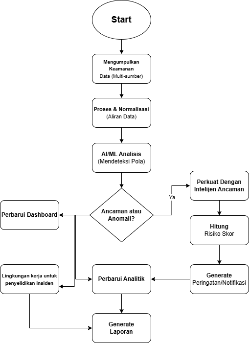
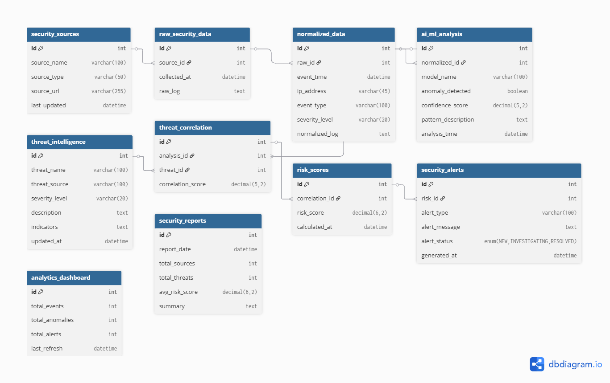

Penjelasan Aplikasi
ThreatAnalyzer Pro adalah platform analitik keamanan siber tingkat enterprise yang dirancang untuk memberikan visibilitas menyeluruh terhadap postur keamanan organisasi. Dengan mengintegrasikan data dari berbagai sumber keamanan, aplikasi ini menghadirkan dashboard yang komprehensif untuk monitoring, analisis, dan pelaporan ancaman siber.
Platform ini menggunakan teknologi big data analytics dan machine learning untuk mengidentifikasi pola serangan, vulnerability trends, dan anomali perilaku dalam jaringan. ThreatAnalyzer Pro tidak hanya menampilkan data real-time, tetapi juga memberikan prediksi ancaman berdasarkan historical data dan threat intelligence global.
Dengan fitur customizable dashboards, automated reporting, dan collaborative workspace, ThreatAnalyzer Pro memungkinkan tim security operations center (SOC) untuk bekerja lebih efisien. Integrasi dengan SIEM, IDS/IPS, dan security tools lainnya memastikan bahwa semua data keamanan dapat dianalisis dalam satu platform terpusat.
Keunggulan Aplikasi
- 📈 Real-Time Security Metrics Dashboard interaktif yang menampilkan metrics keamanan secara real-time dengan visualisasi yang intuitif. Mencakup threat map geografis, attack vectors analysis, vulnerability scoring, dan trend analysis. Setiap widget dapat dikustomisasi sesuai kebutuhan, mendukung drill-down untuk investigasi mendalam.
- 🎯 Advanced Threat Intelligence Terintegrasi dengan threat intelligence feeds global (MITRE ATT&CK, CVE databases, threat actors profiles) untuk memberikan konteks terhadap setiap threat yang terdeteksi. Sistem secara otomatis meng-enrich alert dengan informasi IOC (Indicators of Compromise), TTPs (Tactics, Techniques, and Procedures), dan rekomendasi mitigasi.
- 🔍 Vulnerability Management Sistem scanning dan assessment komprehensif yang mengidentifikasi vulnerability di seluruh infrastruktur IT. Prioritisasi otomatis berdasarkan risk scoring (CVSS, exploitability, asset criticality). Track remediation progress dengan compliance dashboard dan automated patch management recommendations.
Flowchart Aplikasi

Entity Relationship Diagram (ERD)
